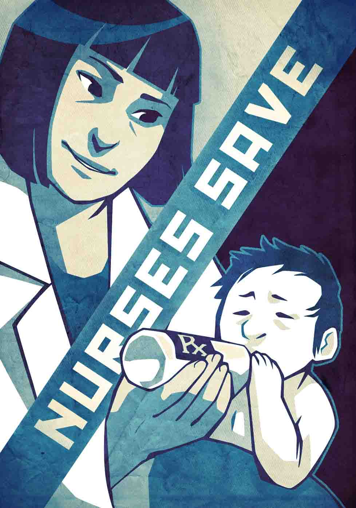

There are more nurses than doctors. And nurse deliver most of the hands-on care.
Patients look to nurses for comfort, insight, and guidance when they experience fear, pain, or uncertainty related to their health.
New doctors rely on skilled nurses when learning to practice medicine.
Nurses are poised for leadership. Higher education is the key: a bachelor's degree means better outcomes for patients, and a graduate degree prepares hands-on nurses for management and leadership.
Recognize the critical role of nurses in your health care, and seek their knowledge.
